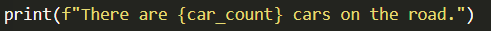
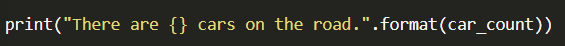
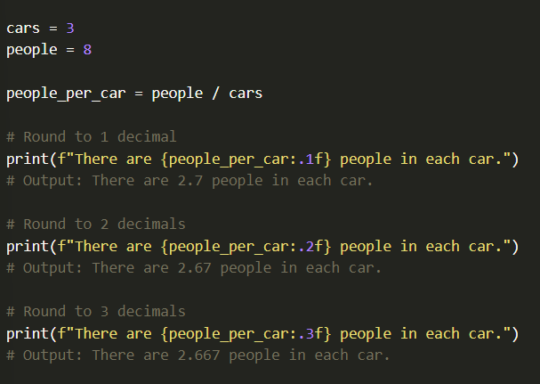
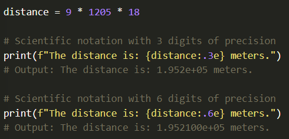
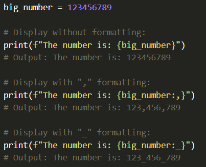
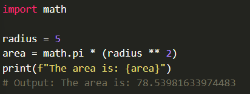
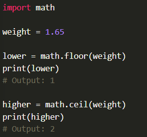

When the computer stores floating point numbers (decimals), it stores the internally in a form of binary scientific notation, and it will store them to a large number of decimal places for you.
Sometimes, you want to display numbers to the user, but you don't want to display the full number of decimal places, so you want to round it. There are various approaches to rounding numbers depending on what you want the computer to store internally versus what you want it to display to the user. One of the simplest and most common approaches is to allow the computer to continue to store the number in a precise way, but format it nicely for the user when you display it.
To round your numbers for display purposes only (but continue to have the computer store the full value internally), you'll make use of format strings. You will now learn options for these.
To use a format string you leave placeholders for your variables using curly braces ({}) and then the value of the variable is inserted into that spot in the string. This can be done in two different ways:
The easiest way, was recently added to python, and that is to put an "f" right before your string, as shown below:
Another approach is to not use the "f" before the string, but instead, use ".format()" after the string, like so:
The effect of these approaches is the same, but the first approach using "f" is a type of shorthand notation, to make things simpler and cleaner. It is important to know about the second way, because you will see it used in many code examples on the internet. Also, the second way is a more standard approach that you will see in other languages (Java, C#, etc.).
There are many different options for formatting numbers using format strings. (if interested further visit Common string operations webpage).
In short, there are options for left/right/center alignment, expressing numbers in different bases (base 10 verse base 16), formatting dates in many different ways, and many other things. The most common formatting you will likely use is to define the number of decimals, define the separator for thousands (the comma), or to use scientific notations. These can the done as follows:
Defining the number of decimals to display
In a format string, you define the precision, or number of decimals to display, by putting a ":.2f" after the variable name (changing the 2 to whichever amount you'd like).
The following shows this in action:
Scientific Notation
You can tell the computer to display the number in scientific notation, or "exponent" notation by using ":.3e" after your variables, where 3 defines the precision and "e" indicates that you using eponent notation.
The following shows this:
Thousands Grouping
When you write number in code, you don't use commas to separate the groupings of digits (in other words, you dont write: 10,000,000 just 10000000). Recently, Python added a notation that lets you type using underscores such as 10_000_000.
In any case, when you want to display large numbers to the user, you may want to display it with commas or udnerscores. this is done by using either ":" or ":_" after the variable name.
This following shows this:
One of the things that makes it possible to write large, complex programs is to make use of pre-existing code written by other people. When someone bundles up parts of their code to make it available to others, it is called a library.
Python comes with many libraries built-in. One of these is called the "Math" library, and it contains common mathematical functions and operations. In order to use code from the library in your program, you need to import or include it. You do this by putting the code "import math" at the top of your program. For example, if you wanted to use the value of Pi included in the math library you do like so:
As you might expect, there are lots of thing available in the math library. You can see the list of Mathematical functions in the official documentation. If you are a scientist of engineer, you'll want to get familiar with a lot of these functions.
Example:
Finally, a note about good style practices. Whenever you write a program, you need to conscious of the fact that your program will need to be understood and potentially reused or modified by others in the future. It may be used by other people in your team, or future employees of the company, or it may simply be you returning to your program after a frew months, trying to remember what you had done.
In addition, writing clean, well-formatted code will help you avoid bugs and problems in your programs as you are writing them.